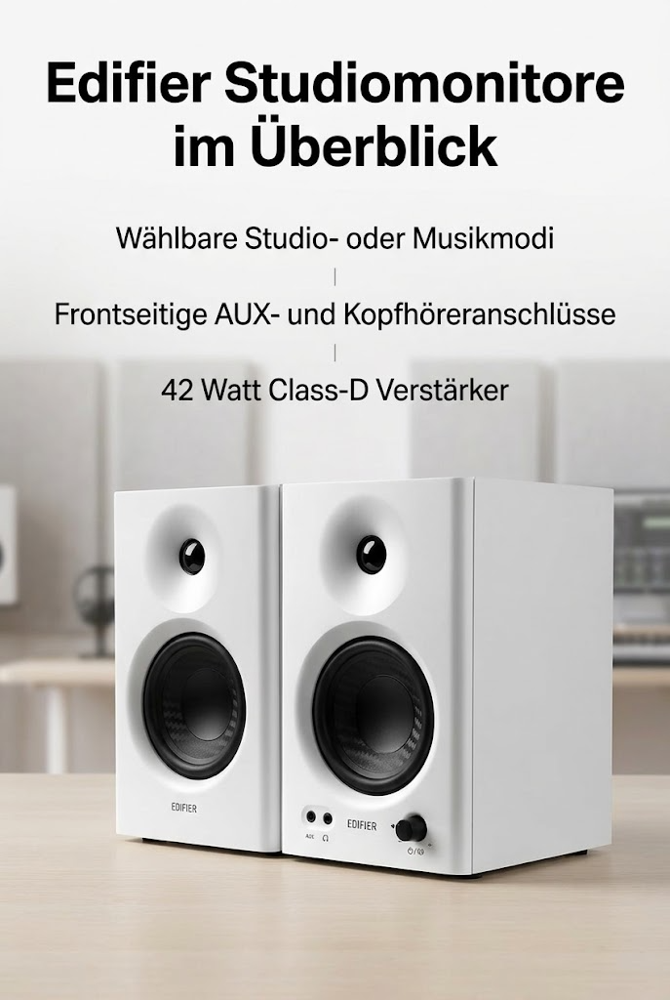

Edifier MR4 kompakte 2
Edifier
Edifier MR4 kompakte 2.0 Studiomonitore (42 Watt) mit Class-D Verstärker und Zwei wählbaren Klangmodi, Weiß

Angaben des Herstellers
- KLANGSTARK - 100mm Tief-/Mitteltöner, 25mm Seidenkalotten-Hochtöner und MDF-Echtholzgehäuse für optimalen Klang.
- ANPASSUNGSFÄHIG - mit dem wählbaren Studio- oder Musikmodus immer mit der richtigen Einstellung hören
- BEDIENFREUNDLICH - frontseitge Anschlüsse (AUX und Kopfhörer) und multifunktionaler Drehregler für Lautstärke, Soundmodus und Ein-/Ausschalten
- ANSCHLUSSFREUDIG - Cinch (RCA) und frontseitiger AUX-Anschluss. 6,35mm TRS Balanced Input für den Anschluss an Profi-Audioequipment.
- HOCHWERTIGE KOMPONENTEN - TI ADC-Chipsatz (Analog-Digital-Wandler) mit einem SNR von bis zu 99dB. Digitaler Verstärker TAS5713 von TI und integriertes DSP für hervorragende Performance.
Werbung. Diese Seite enthält Partnerlinks: Als Amazon-Partner verdiene ich an qualifizierten Käufen. Für dich ändert sich nichts am Preis. Preise und Verfügbarkeit stehen bei Amazon und ändern sich laufend.